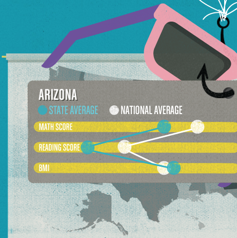

This website has amazing graphics as well as moving images which makes this site both entertaining and successful. When you first enter the site the loading symbol is a bouncing basketball which is innovative and a good fit for the websites theme. The navigation is easy to follow for any age and it moving slides make it more unique.
The website its self provides facts based on statistics and how you answer each of the following questions. I love there are a wide variety of colors and illustrations because it makes the page more exciting. Each loading symbol is different from one another and the pages are different as well.
